01
Spatial manifesto
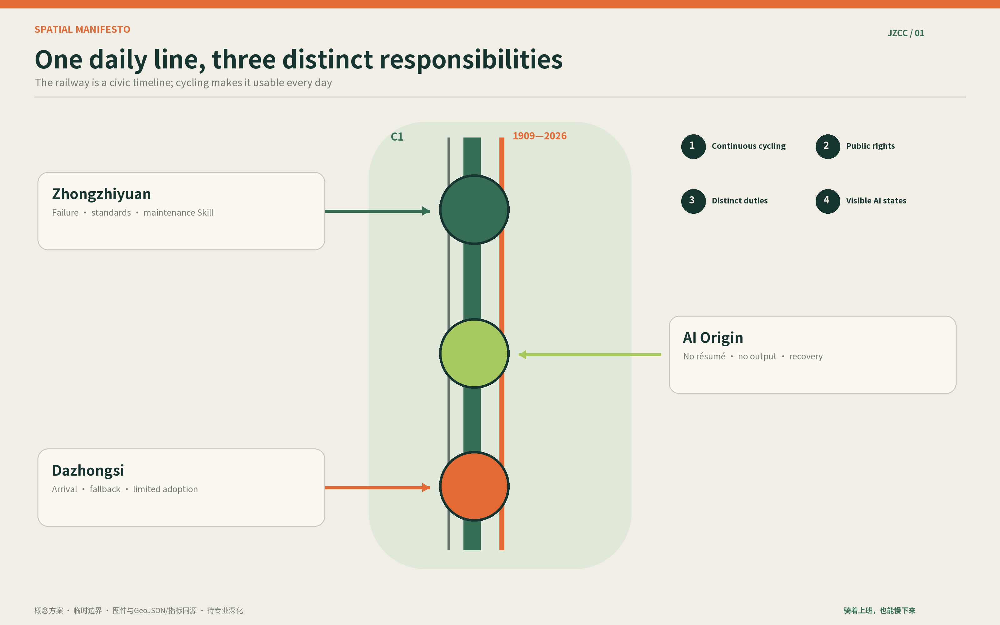
A cycling-first public-AI adoption corridor: humane in daily life, rigorous in testing, clear about exit.


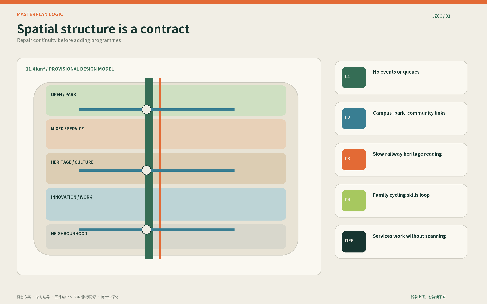
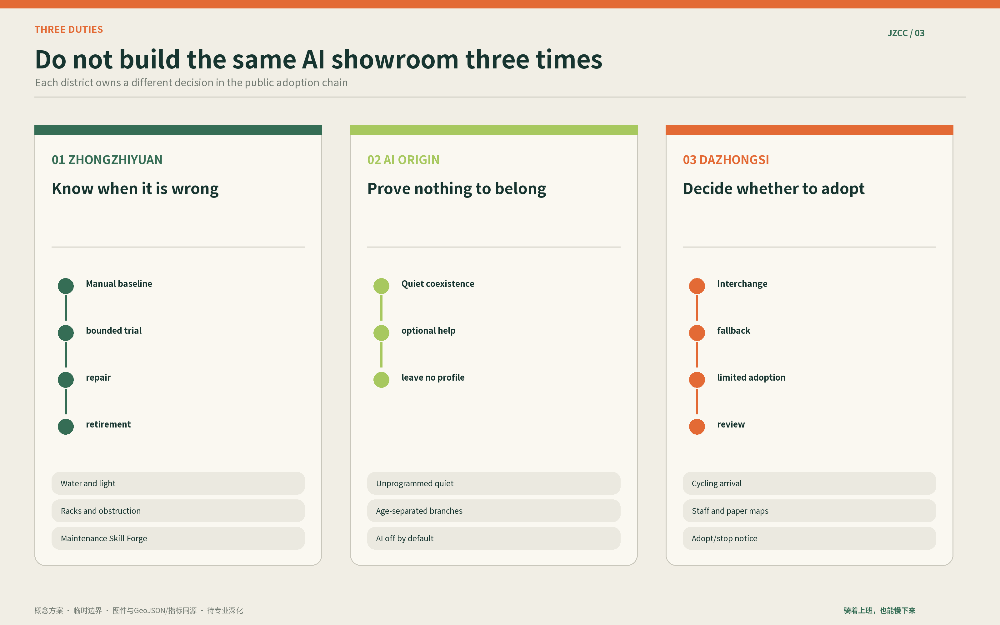
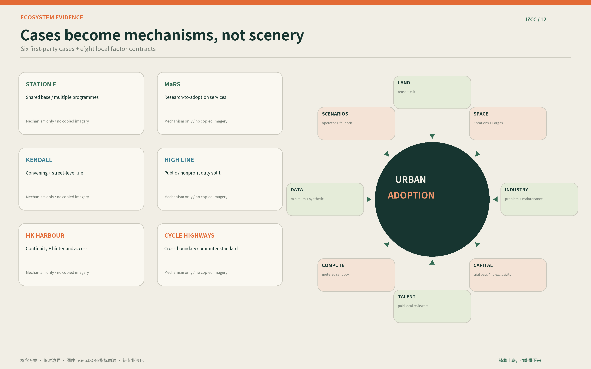
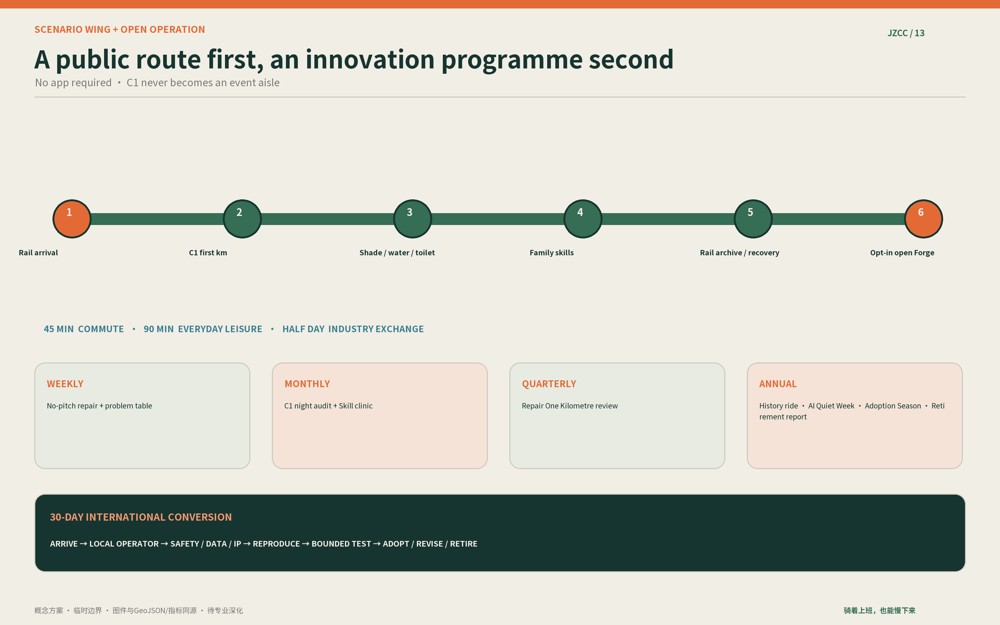
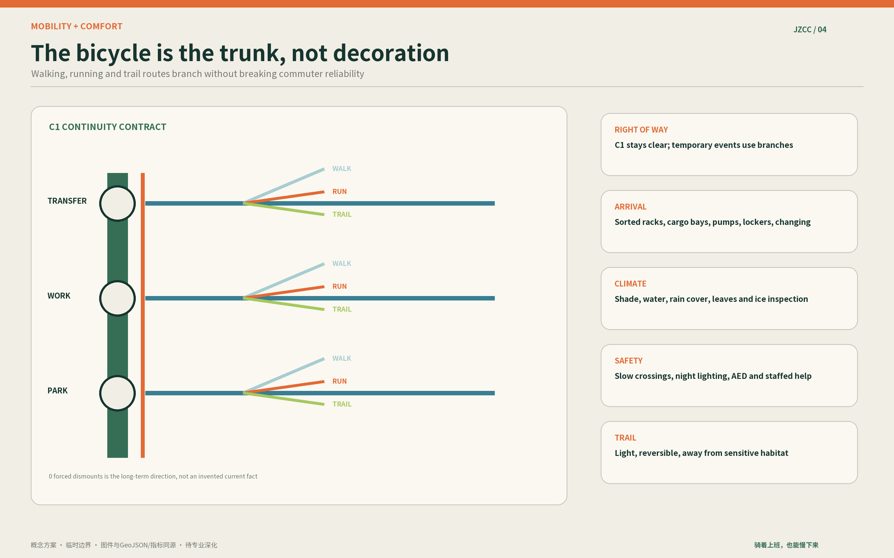
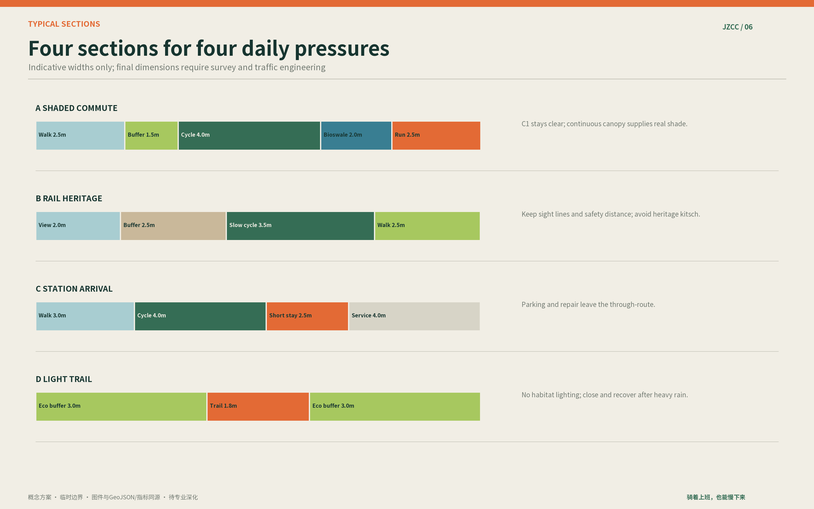
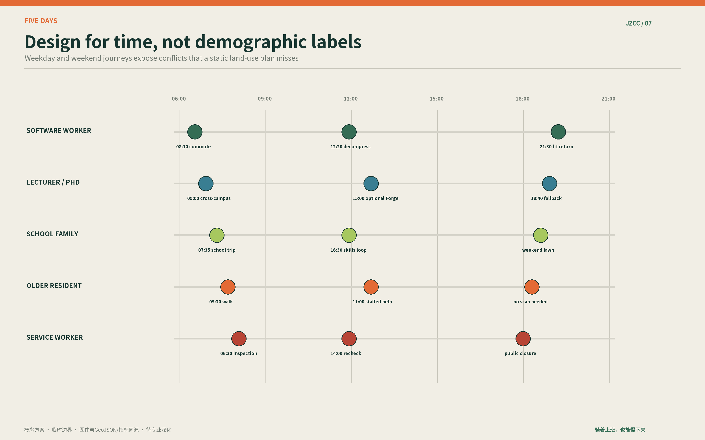
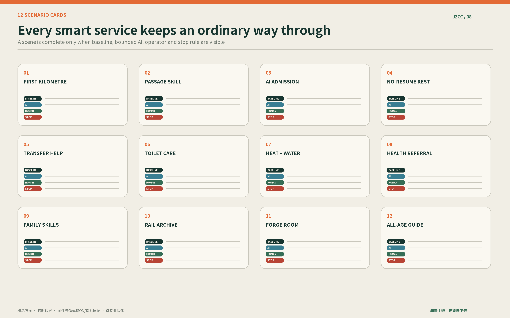
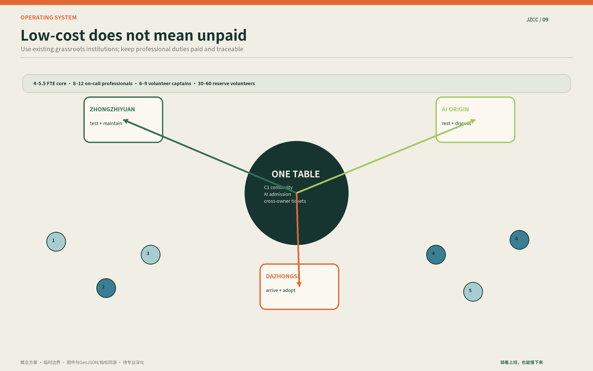
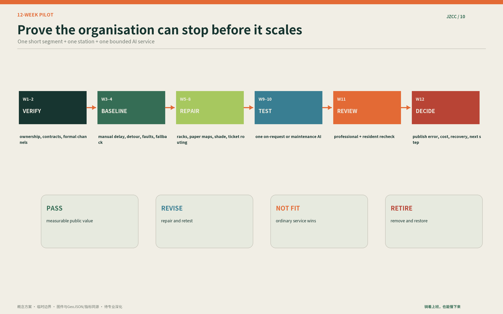
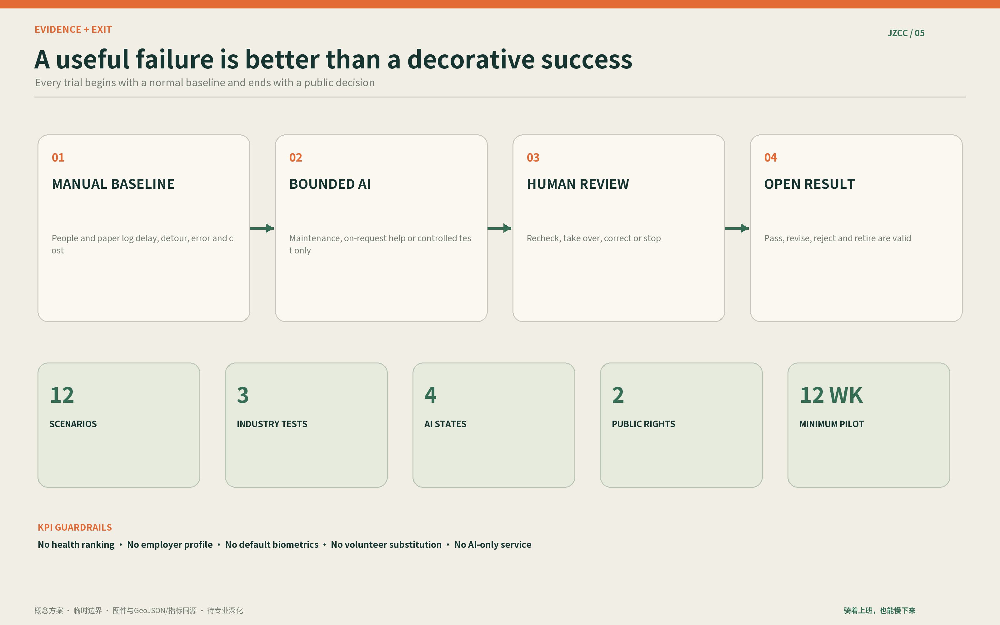
AI-generated concepts only; plans, GeoJSON and metrics carry spatial evidence.
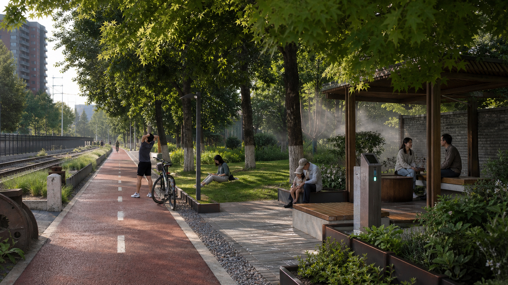


provisional model
model green ratio
model public-space ratio
scenario cards
bounded pilot
Overview map · Three-level scope · Key areas · Land-use zones · Mobility · Blue-green public space · Buildings · Renewal projects · AI scenarios · Core metrics · Task coverage · Self-check status · Sources · Assumptions
Scope · geometry · taskbook crosswalk · sources · rights · assumptions · metrics · pilot · staffing · exit.
See visual/assets/formal-scoring-crosswalk.json, sources.json, visual/assets/asset-register.json, compliance_matrix.json and self_check.json.